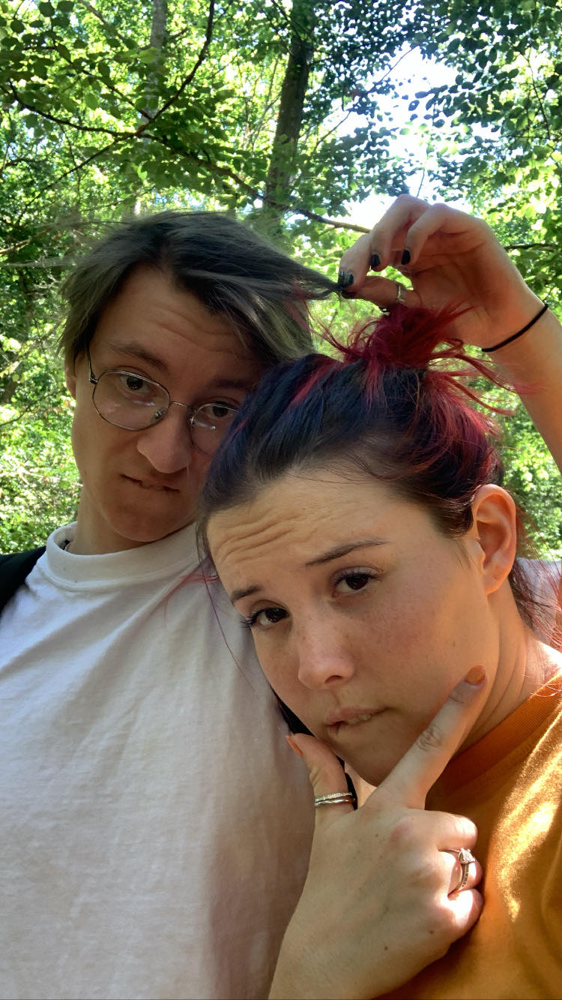

ÉTAPE 1 : Le réconfort
Peu importe la raison de ta tristesse, que ça soit un manque, quelque chose qui s'est mal passé,..
Je suis sûr d'une chose c'est que tu es et restera une personne formidable.
Je te promets que tu auras un calin et un bisou pour chaque larme qui a pu couler sur ton visage.
Chacun de tes sentiments négatifs, passés présents et/ou futurs seront réconforté à coup de douceur.
On est peut-être loin mais tu peux être sûr que je m'occuperai de toutes les blessures que ton petit coeur a subi.
Etre triste ne veut pas dire que tu es nulle, tu es juste très émotives, souvent sous pression et surtout loin de ton chéri.
Autorise toi à pleurer de temps en temps si tu en as besoin. La seule chose que je te demande c'est de ne pas t'isoler.
Tu pourras toujours venir près de moi, me parler ou demander de l'amour, profite donc d'avoir mon épaule pour te reposer
de temps en temps ♥.
ÉTAPE 2 : Commencer à sourire

La vie est belle ma puce, enfin, elle l'est devenue depuis que tu la partages avec moi.
Les raisons de ta tristesse peuvent être multiples mais je suis sûr d'une chose, la vie est belle lorsqu'on la partage avec son âme sœur.
Alors souris mon amour, à deux on peut tout faire. Même si pour l'instant ça ne va pas, on peut être sûr que le futur n'en sera que meilleur.
J'ai mis exprès des photos drôles de nous, regarde les, on fait les cons, tous les deux.
Tu y aurais cru toi ? Qu'on prendrait un jour des photos
comme ça tous les deux ? Moi pas. Pourtant c'est notre avenir, ce n'est qu'une question de temps.
Tu auras bientôt tous les câlins qu'il te faut
pour soigner ton petit cœur.
ÉTAPE 3 : Je sais je suis parfait
Là c'est l'instant boostage de mon ego hehe.
Comment peux tu être triste avec un bebou aussi parfait que moi hein ? Nan plus sérieusement,
je sais que quand tu es triste tu ne le dis pas forcément.
Tu as du mal à exprimer ce que tu ressens,
à mettre des mots sur les raisons de ta tristesse ou tout simplement, de faire le premier pas pour venir parler..
Cette partie est faite pour que tu puisses avoir un peu de réconfort sans avoir à le demander car je sais que tu as
besoin de petit moment seule de temps en temps.
Si tu ressens le besoin de dire des choses, n'importe quoi mais que tu n'arrives pas à m'en parler,
note tout quelque part. Essaye de dire ce que tu as sur le cœur et partage moi tes ressenti lorsque tu en seras capable ❤️
Durant ta vie, personne n'as vraiment pris la peine de savoir ce que tu ressentais réellement, tu n'as pas l'habitude
avec tout ça c'est normal.. Cela prends du temps mais ça viendra ❤️
Je t'aime ma Loulou